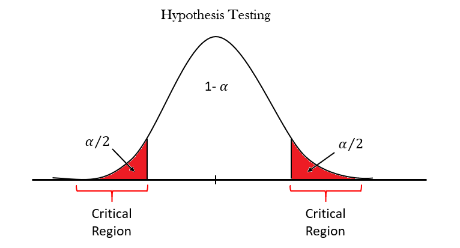

library(tidyverse)Overview
Multiple testing, what does it means?
Sometimes answering a research question means evaluating the different combinations of predictors, and this is the case when multiple hypothesis testing is made.

The following are the fundamental steps for understanding how to proceed when multiple hypothesis testing is needed.
Image credits: Hypothesis Testing On Linear Regression-medium.com
Research questions
In general, hypothesis testing is made for comparing the expected values of two predictors which are the key drivers for explaining the trend of certain variables that are depending on the levels of those predictors.
Going into more detail, making a real-life example, we might need to evaluate the influence of gender and age on the increase of heart diseases. Under this specification, simple questions to be answered would be:
to be a female can be more or less risky in incurring heart disease?
or, what is the age on average at which heart diseases start increasing?
To answer these questions we need to make some assumptions:
there is no gender difference in heart diseases increasing age is not a cause of heart diseases
Hypothesis testing
The first hypothesis is namely, the null hypothesis \(H_{0}\), and in general, it assumes that there would be no difference in mean (expected value) between the levels of the predictors. In case the null hypothesis fails, an alternative hypothesis is considered, such as there is a difference.
- Null hypothesis \(H_{0}\): the difference in mean equals zero
- Alternative hypothesis \(H_{a}\): the difference in mean is not zero
This is the starting point of making a hypothesis testing, then more variables can be tested, excluded, or kept whether there is a difference in the mean or not. And, so we are talking of multiple testing of hypothesis.
Steps to hypothesis testing
- Define the null and alternative hypothesis
- Construct a test statistic against the null hypothesis
- Compute a p-value to quantify the probability to obtain a value that is the same or more extreme than the test statistic under the null hypothesis
- Decide whether to reject the null hypothesis
Step back to modeling
Let’s hypothesize that we are investigating the root cause of heart diseases. To be simplistic we hypothesize that only gender and age are the key drivers for high blood pressure, the cause of the disease.
How would you make a model for answering this question?
As an example, we use the heart_disease dataset from the {cheese} package, and to begin our investigation we consider two predictors Age and Sex.
Model function: \(y=\beta_{0}+\beta_{1}x_{1}+\beta_{2}x_{2}\epsilon\)
Hypothesis:
- \(\beta_{i}\) equals to zero
- there is no difference between the mean blood pressure in female and male groups.
library(cheese)
heart_disease %>%headheart_disease%>%
ggplot(aes(y=HeartDisease,fill=factor(Sex)),color="white") +
geom_histogram(stat="count",position = "dodge")+
labs(fill="Sex")+
scale_fill_brewer()+
theme_test()To be continued…